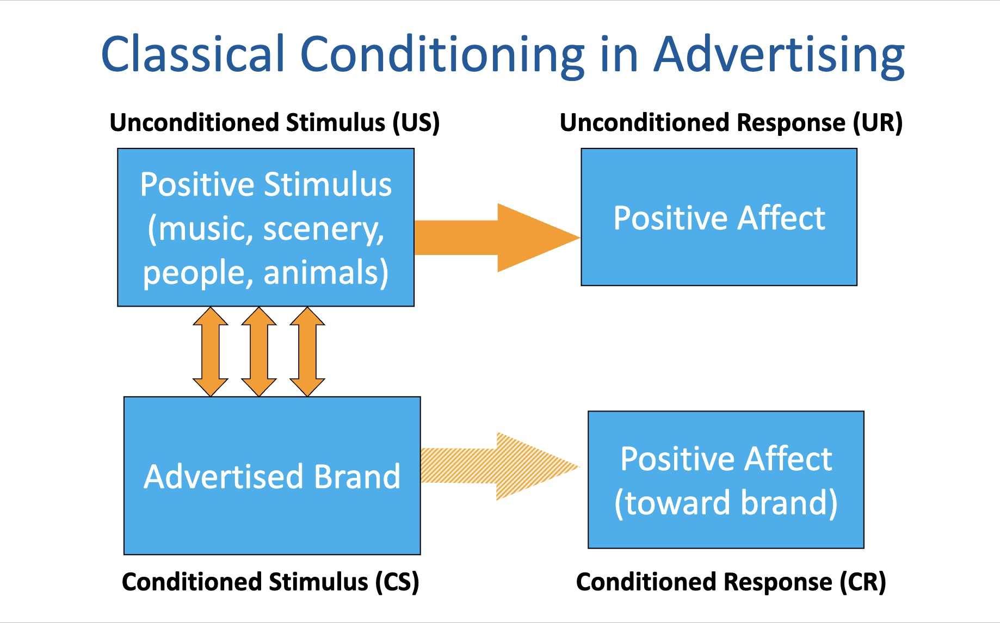

Classical Conditioning is a theory invented by Ivan Pavlov that correlates a conditioned stimulus with an unconditioned stimulus and results in a conditioned response . Pavlov first got his idea from studying dogs natural reaction to food and pairing that with the sound of a bell. Pavlov noticed that the dogs would start to drool even before their food was placed in front of them and to test this he paired the sound of a bell with the delivery of food. Eventually, the dogs learned to associate the sound of the bell with the food, and over time started to drool at the sound of the bell alone.
We see this same idea in marketing and ad campaigns all the time. Coca-Cola, for example, has been using classical conditioning for years to train consumers to associate their brand with happiness.

There are four parts to classical conditioning that are essential to get the results needed.
Built by Riley Burge · BMIS 235